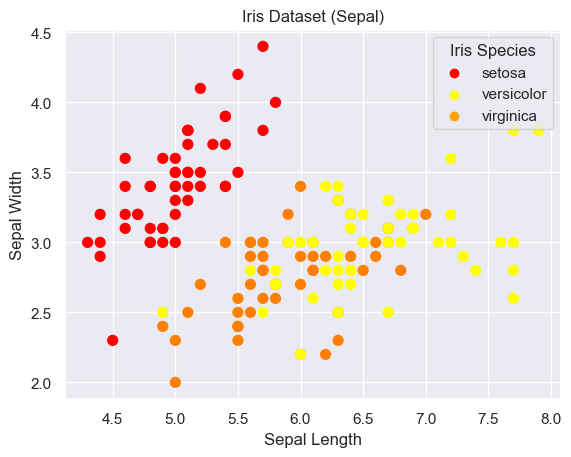
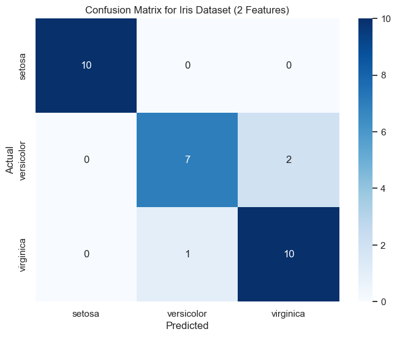

A machine learning project that uses SVM's to predict the species of flower a iris is, based on the flower's sepal length and width.
Why choose this?
When searching for a suitable dataset to use for this project, I wanted to pick something that was interesting and could be used. The whole idea of this project is to be able to classify the flowers into their representative species.
The model shows how a "Target" interacts with "Features". With this data, having a function in place to allow for user input will allow for an accurate prediction of the species of flower just based off of the length and width of the sepal.
SVM's were selected for this project because of their ability to perform multi-class classification, as the "Target" variable in the dataset represents the species of flower. It works well with classifying which species the user input will belong to.
From the dataset, the data that was used in this was, for the "Target", all three species of iris flower, and for the "Feature", just the sepal length and width.
The iris dataset was taken from the sklearn.datasets using load_iris.
There was no preprocessing done for this model, as the dataset was very clean and functional.
Using Python (Jupyter Notebook) and the import matplotlib.pyplot as plt, I visualized a single scatter plot diagram. Inside the scatter plot, it shows the three different Targets, which are color-coded to be able to distinguish them, as well as a legend to allow readers to identify them.
Inside of the scatter plot, there are many different data points that can be seen. These points are all the different species that are located in the dataset.
Also, a confusion matrix was constructed to observe the model's performance.
Below are the Scatter plot and Confusion Matrix which were constructed:
 The Support Vector Machine (SVM) algorithm was used to classify the Iris dataset into its three species: Setosa, Versicolor, and Virginica. SVM is a supervised machine learning algorithm that works by finding the optimal hyperplane that best separates the data into different classes. The goal of SVM is to maximize the margin between the hyperplane and the nearest data points (called support vectors) from each class.
In this project, a linear kernel was used, which assumes that the data can be separated by a straight line (or hyperplane in higher dimensions). The linear kernel was chosen because the Iris dataset is relatively simple and linearly separable, especially when using only two features (sepal length and sepal width). However, SVM can also handle non-linear decision boundaries using other kernels, such as the Radial Basis Function (RBF) or polynomial kernels.
The SVM model was trained on 80% of the dataset, with the remaining 20% used for testing. The model achieved high accuracy, as demonstrated by the confusion matrix and classification report. The decision boundaries were visualized to better understand how the model separates the classes.
Two different online sources were mainly used in the creation of this SVM model. They were used as a foundation in order for the model to be built on:
This project was implemented using the following tools: